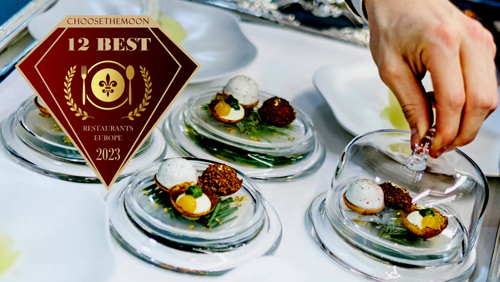
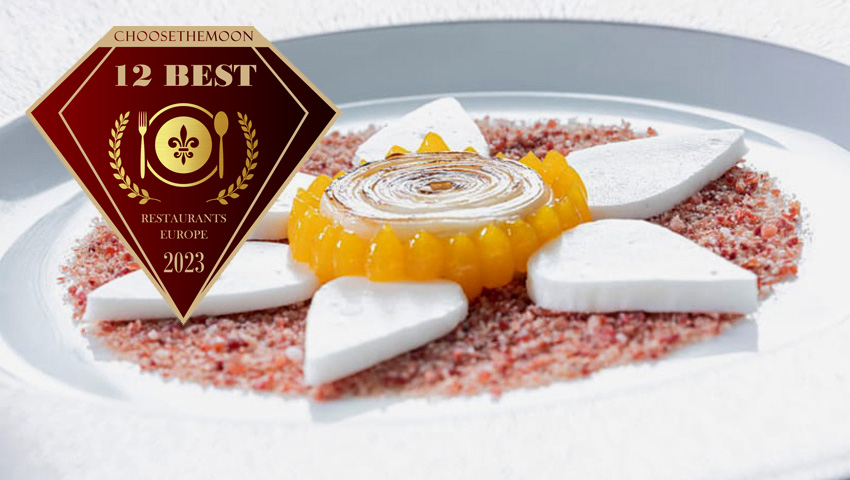
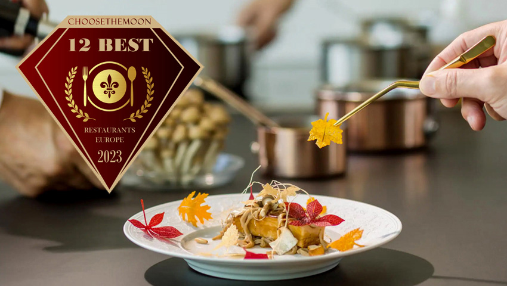

Explorando a Europa: Top 3 Restaurantes que São Destinos Turísticos Gastronômicos
1 - Le Cinq - Paris - França
Le Cinq by Christian Le Squer é sinónimo do apogeu da cozinha francesa moderna e elegante, combinada com os vinhos mais raros selecionados com o máximo critério. As suas três estrelas Michelin são o reflexo da experiência gastronómica de uma vida. Está situado numa das salas de jantar mais elegantes e majestosas da cidade de Paris.
2 - Restaurante Akelarre - San Sebastian - Espanha
Num recanto encantador da costa cantábrica é onde se situa este restaurante com três estrelas Michelin com Pedro Subijana no comando. A sua capacidade artística à frente da cozinha e a sua dedicação determinada levaram o seu restaurante ao topo da gastronomia e tornaram a sua cozinha mundialmente conhecida.
3 - Deessa - Madrid - Espanha
É o restaurante exclusivo do luxuoso hotel Mandarin Oriental Ritz, concebido, desenvolvido e supervisionado pelo famoso Chef Quique Dacosta. Situado na bela sala Alfonso XIII, com vista para o Ritz Garden, é o cenário perfeito para a cozinha deste famoso chef, que não conhece fronteiras no que diz respeito ao paladar. Foi premiado com 2 estrelas Michelin.